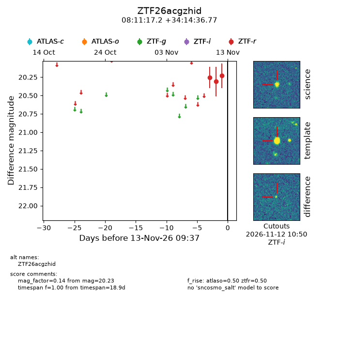
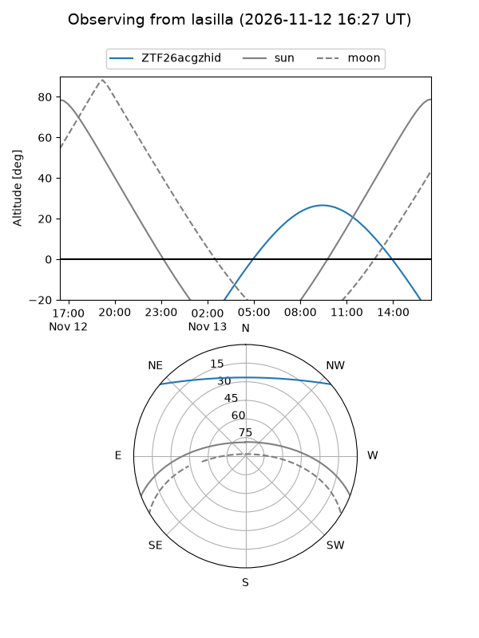
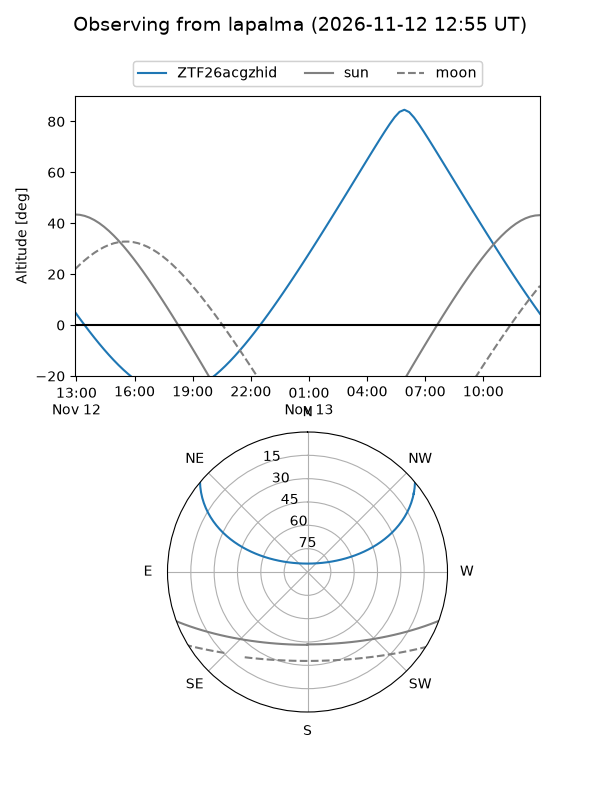
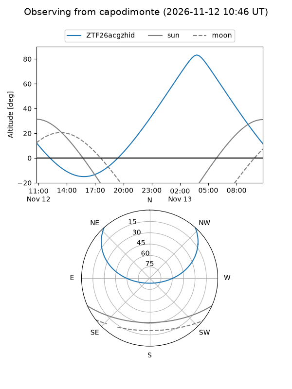
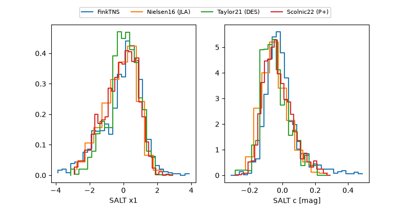

ZTF26acgzhid
Target ZTF26acgzhid at 2026-11-13 09:38
Aliases and brokers:
FINK-ZTF: ztf.fink-portal.org/ZTF26acgzhid
Lasair-ZTF: lasair-ztf.lsst.ac.uk/objects/ZTF26acgzhid
ALeRCE-ZTF: alerce.online/object/ZTF26acgzhid
Direct TNS query: direct search
alt names
ZTF26acgzhid (ztf,fink_ztf)
Coordinates:
equatorial (ra, dec) = 122.8215,+34.24355
equatorial (HMS+DMS) = 08:11:17.17,+34:14:36.77
galactic (l, b) = (187.3409,+30.51458)
Flags:
peak dt:
Photometry:
last atlaso=nan, ztfr=20.23
1 atlaso, 3 ztfr detections
Lightcurve

Visibility



Additional plots
